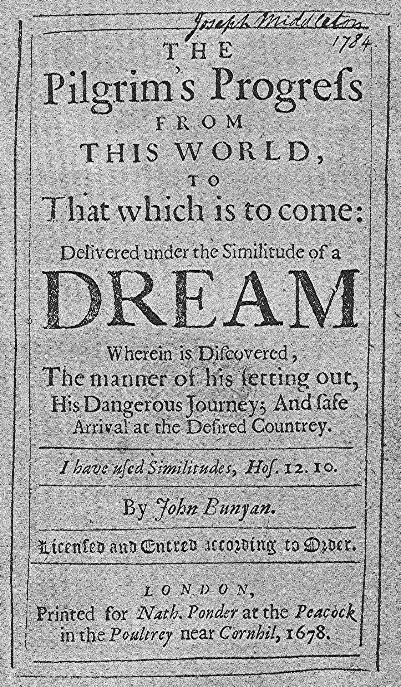
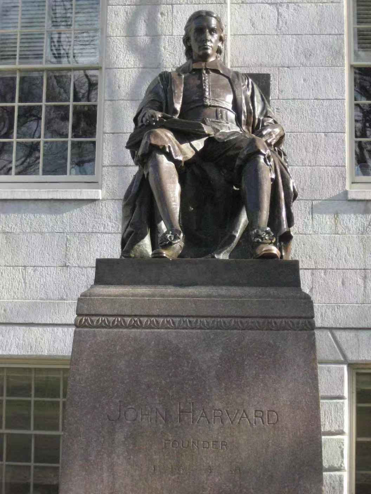

6. 美洲大陆，下一片培育民主的“净土”
大家好，我是杨照。继续来为大家介绍托克维尔所写的《论美国的民主》。
新大陆与旧贵族
这本书有一部分是在为欧洲的读者介绍美国的历史，而要理解美国历史的独特之处，有两个关键词我们不能不讨论。
第一个是“新大陆”。“新大陆”之“新”，对照欧洲所在，欧洲人早已熟悉的欧亚大陆。欧洲人很早就从陆路上知道了“远东”的存在，但要到大航海时代，15世纪末，才由哥伦布探索前往远东的航海路径的时候，误打误撞发现了美洲。
新大陆是欧洲人没去过的大陆，还有，新大陆没有像欧亚大陆那样已经发达、延续了几千年的农业文明。这项条件就使得新大陆有大块大块未经开发的土地，还有丰富的自然物产；而前面一项条件，则是保证了这里没有欧洲式的贵族。
托克维尔的看法是：贵族基本上是土地稀有竞争情况下所产生的土地掌控者。贵族的基础是土地利益，因为土地有限，控制了够多土地的人，就可以借由放租土地来坐享农业成果，也就能够拥有集中的财富，同时拥有以财富换取权力的机会。贵族的权力，追根究底，也是来自于土地，来自于土地匮乏因而造成的竞争。
新大陆就不会出现这种源自土地的贵族，因为在新大陆，土地太大、太多了。你圈划、占有了一块土地，叫人家来耕种，你要坐在家里抽百分之五十的收成，谁理你啊！愿意耕种的人，轻易就可以在别处找到土地，那是他自己的土地，他就可以保留百分之百的收成，完全不必受你的限制，因为他不需要乞求你的土地。
因为新，这块大陆的土地所有权还没有固定下来。欧洲之所以变“旧”，依照托克维尔的解释，就在于土地所有权建立、固定下来了，绝大多数的土地都有主人。没有土地的人就只好贡献劳力，将自己劳力所得的一部分拿去换取土地所有权。于是就分出了有土地的人和没有土地的人，这两种人之间的绝大差别，也就是贵族和平民的差别。
新大陆没有贵族，美国是在没有土地贵族的情况下建立的一个国家，而且美国立国一段时间之后，到托克维尔写《论美国的民主》的时候，都还不曾遇到土地稀有、抢夺土地、垄断土地资源的严重问题，也就不太可能在这个国家当中出现欧洲式的贵族。
求生还是朝圣？
找到第二个关键词，那是“清教徒”（Puritans）。
1620年之后陆续抵达新英格兰的这群人，他们自称为“朝圣者”（Pilgrims）。为什么会有这样的名字呢？朝圣（Pilgrimage）有着双重意思，一重指的是前往圣地朝拜。圣地可能是耶路撒冷，可能是罗马，也可能是哪一个圣人的出生地或埋葬处。不过这群人他们离开英国，渡海到当时被视为化外之地的北美大陆，那里不可能有任何圣者的圣迹。显然，他们的“朝圣”（Pilgrimage）指的不是这个意思。
朝圣的第二重意思，那是从班扬（John Bunyan）所写的《天路历程》衍生而来的意思，那是一段朝向天堂的精神寻索。中文我们译作《天路历程》的这本书，英文原名是A Pilgrim's Progress，直接翻译的话应该是“一位朝圣者的进程”，或者是“一位朝圣者的路途”。这比较接近这群移民者的心情：他们想象自己和班扬笔下的朝圣者一样，离开了邪恶、不正义的世间环境，历尽千辛万苦，去寻找一块未受污染的净土。

The Pilgrim's Progress from This World to That Which is to Come; Delivered under the Similitude of a Dream, John Bunyan, 1678 in London
托克维尔很重视这件事，他特别强调一项事实：这群人——自认为要去朝圣的清教徒们，他们并不是基于经济上、生活上的原因去到北美洲的。他们并不是因为在故乡生活困苦，缺乏足够的资源或者是足够的能力，所以才决心离乡背井的。他们不是流浪者，他们也不是冒险家。如果单纯只是生活上的困难，他们不会走得那么远。只是想要换一个地方去找寻生计，没有理由远渡重洋，跑到大西洋的另一岸。
对托克维尔来说，这又是另外一项上帝的事实（Providential Fact），使得来到北美洲的是一群具有强烈宗教信仰的清教徒，由他们，而不是一群冒险家、淘金客或者是征服者，建立了美国。
清教徒一方面无法见容于当权的英国国教，另外一方面，他们也看不惯英国一般的宗教风气，所以决定去寻找、去创造他们自己更纯洁的天地。
他们有着非常强烈的内在个人信仰。清教徒主张：信仰是人和上帝，或者是人和耶稣基督之间的事。人可以借由阅读《圣经》以及其他的启悟来理解耶稣基督的慈爱，来了解上帝的意旨。这中间不需要教会的介入，教会无权垄断个人和上帝之间的沟通。清教徒也相信，上帝要人过最俭朴、最严格的生活。任何世间的享受都让我们分心，让我们留恋此世，而减损了对于神圣彼世的向往跟追求。就连崇伟的教堂、庄严的圣像、华丽的装饰，在清教徒眼中，都是魔的象征，而非神的标记。
清教徒的信仰就更全面地表现在他们的生活上，换句话说，他们几乎没有信仰以外的生活。生活和信仰，二而一，一而二。
清教徒和上帝之间的关系，没有中场休息，这是他们和传统教会信徒最不同的地方。教会信徒的信仰有时间性：上教堂望弥撒，这是宗教时间；找神父告解，这是宗教时间；还有人生最大关键时刻，出生、受洗、结婚、死亡，这也是重要的宗教时间。但除此之外，人有许多不和宗教发生直接关系，可以感觉不到宗教存在的“正常生活”，或至少是“世俗生活”时间。
但清教徒强烈反对这种“可以休息的宗教生活”。他们的信念是：人是为上帝而活着，你的生活就是侍奉上帝的生活。要过一种上帝认可，上帝可以接受，可以证明你是上帝选民，而非上帝眼中“不义之人”的生活。这样的信仰无法见容于教会。
英国国教是个奇怪的东西，从反对罗马教会权威的立场上看，英国国教属于新教，但它的创建者却不是哪个宗教先知、神学领袖，而是再世俗不过的英王亨利八世。亨利八世是为了自己的婚姻问题，和不准他离婚的罗马教宗决裂，愤而要英国国民改信国教。英国国教并没有自己的特殊教义信仰，也没有太多异于旧教的仪式，基本上就是承袭罗马教会的那一套信仰和仪式，只是将教会的至高领袖换成了英国国王。因而英国国教的教会没有什么个人自主信仰空间，其中又充满了形式主义，和清教徒的信仰形成了强烈对比。
清教徒就是要离开英国国教，去找到一个清静的地方，去建立自己的信仰王国，这是他们勇气和毅力的来源。
谎言里的哈佛
“五月花号”1620年登陆的地方，今天属于美国马萨诸塞州（麻州）。在麻州，有一个很有名的学校，叫做哈佛大学。哈佛大学有一座著名的铜像，被学校里的师生昵称为“The Statue of Three Lies”（三个谎言的铜像）。你们可以到哈佛大学去参观，顺便看看这座铜像。

The Statue of Three Lies（John Harvard, Founder, 1636） 图源网络
知道这座铜像被称为“三个谎言”，你可能预期会看到铜像底下有些铭文，以为是铭文的内容有什么样的错误；那你就会很意外地发现，在你眼前的铜像再简单不过。一个坐像在上面，底下的石面总共就只有最基本的几个字：“John Harvard, Founder, 1636”，说明这个人是约翰·哈佛，他是这所学校的创办人，这所学校创立于1636年。就这样，简单到这种程度。
我们要到哪里去找三个谎言呢？
第一个谎言，约翰·哈佛，你所看到的铜像不是约翰·哈佛。铜像铸造的时候，离约翰·哈佛活着的时代已经超过两百年了，约翰·哈佛没有留下任何的画像，谁都不晓得他长什么样子，如何替他塑像？那就找了学校的一个长得特别帅的男学生来当模特，用他的模样糊弄过去。
第二项谎言，约翰·哈佛不是哈佛大学的创办人。虽然今天这个学校挂他的名字，但创办学校的其实另有其人，是在学校创办两年之后，约翰·哈佛，他慷慨捐了一笔钱和一批书给学校，学校才改名叫做“哈佛”。
第三个谎言是连着第二个谎言来的。约翰·哈佛捐钱、捐书，学校改名为“哈佛”的时间，也不是1636年，而是1638年。1636年是学校最早创立的年份，那个时候学校不叫“哈佛”，也和约翰·哈佛一点关系都没有。
不容易吧！到哪里再找如此厉害的铜像，这么短短的三行字，每一行都是一个谎言。
“三个谎言的铜像”有助于我们认清几件重要的历史事实。最早的殖民者在1620年上岸，来到了一个遥远的国度，费尽千辛万苦在这里重建生活；才不过十几年之后，1636年，他们就成立了一所学校。这所学校最早的名字是Cambridge Seminary（剑桥神学院），1638年，得到了约翰·哈佛的大力赞助，这所最早的学校才改名为——可不是今天我们所认识，我们所知道的“哈佛大学”，而是“哈佛神学院”。
这就具体反映了托克维尔他所强调的事实：来到北美的，不是一群单纯逃难避难、仓皇求生的人。如果是出于讨生活的动机，你觉得他们还会来不及站稳脚步，就急急忙忙要成立学校吗？而且最早、最先成立的，不是教授任何使用知识、技术的学校，是神学院。
来到北美殖民地的人，带着他们的家庭，带着他们的宗教，也带来了对于宗教和教育的严肃态度。这几项条件加在一起，大有助于铺设一个宜于建立民主社会的基础。
清教徒的宗教信仰和他们的教育态度基本上紧密扣连。他们要教给孩子的，不只是正确的行为，让他们表面守规矩，让他们背得出“教义问答”，让他们做礼拜的时候知道该做什么就好了。他们的宗教看重的是内心真实的信仰，因而对于外表行为，对于制式、仪式的虚伪格外敏感。他们的教育必须要透入人的内心，真正去影响孩子在想什么，决定孩子的根本价值观。
所以一开始他们就办神学院。并不是为了训练传教士，所以办神学院，而是认定人要追求更高的知识，通过神学是唯一的路，神学也是唯一值得吸收，唯一值得学习的知识。欧洲早在公元12世纪就有大学了，然而来到北美的清教徒，他们没有兴趣办大学，他们需要的是帮助人认识上帝，帮助人坚定信仰的地方，那就是Seminary最主要的功能。
如果来到北美大陆的不是清教徒，而是其他抱持生活、经济动机而来的人，像是去到了南美洲的西班牙殖民者，首先，他们不会抱定要在新大陆留居的决心；第二，他们不会有如此强烈的动机，一定要维持自己的社群，维持自我群体的高度自主性。
从这里，托克维尔非常敏锐地看到了，让我们了解美国建国基本来历的特殊性；同时他也就联系到，正因为这样特殊的条件，让美国成为一个民主跟平等的国家。
感谢您的收听，我们下次再会。